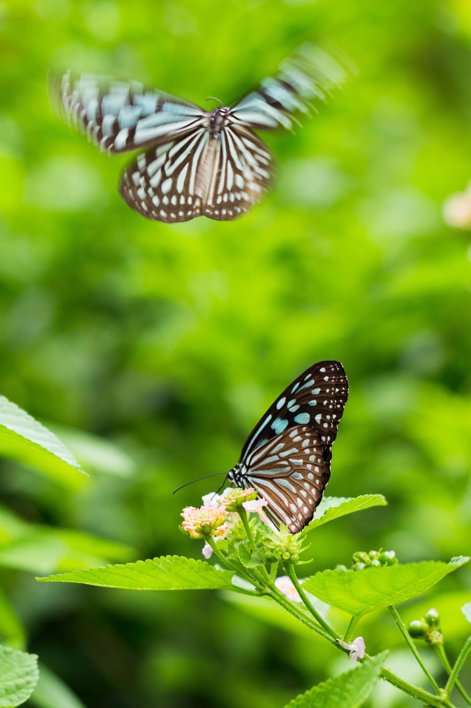

El objetivo es gestionar sosteniblemente los bosques, luchar contra la desertificación, detener e invertir la
degradación de las tierras y detener la pérdida de biodiversidad.
Los bosques cubren casi el 31% de la superficie de nuestro planeta. Desde el aire que respiramos, al agua que
bebemos y los alimentos que comemos, los bosques nos mantienen. Debemos pensar en ello. Alrededor de 1.600
millones de personas dependen de los bosques para su subsistencia.
La degradación de la tierra afecta directamente a casi el 75% de los pobres del mundo. ¿Sabías que los bosques
albergan más del 80% de todas las especies terrestres de animales, plantas e insectos? ¿Y que de las 8.300
razas conocidas de animales, el 8% se ha extinguido y el 22% está en peligro ¿Por qué? de extinción?
La diversidad biológica y los servicios de los ecosistemas que sostiene pueden ser también la base para las
estrategias de adaptación al cambio climático y reducción del riesgo de desastres, ya que pueden reportar
beneficios que aumentarán la resiliencia de las personas a los efectos del cambio climático.
Inevitablemente, cambiamos los ecosistemas de los que formamos parte solo con nuestra presencia, pero podemos
tomar decisiones que contribuyan a conservar la diversidad o a devaluarla.
Entre algunas de las cosas que podemos hacer para ayudar están el reciclaje, comer alimentos producidos a
nivel local y de manera sostenible, consumir solamente lo que necesitamos y limitar el uso de energía mediante
sistemas eficientes de calefacción y refrigeración. También debemos ser
respetuosos con la fauna y flora silvestres y participar solamente en actividades de ecoturismo que se
organicen con ética y responsabilidad para no perturbar la vida silvestre.
